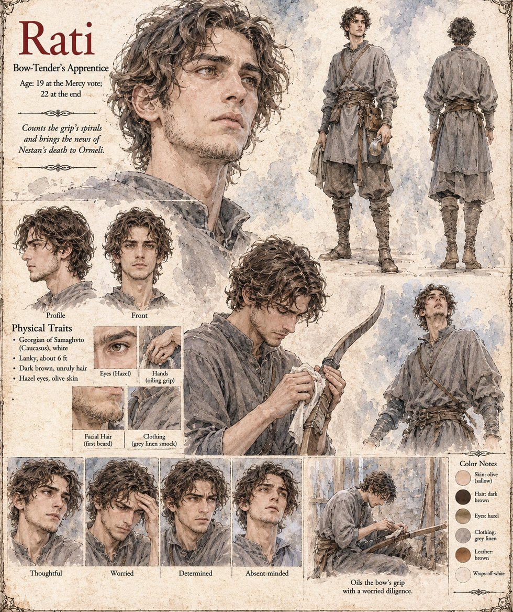

Rati
Apprentice to the old bow-tender of the Hall of the Unstrung Bow · counter of the grip’s spirals · 19 at the Mercy Vote, 22 at the end
A nineteen-year-old apprentice who has spent two years oiling the grip of the bow in the Hall, and most of that time counting. The ridges in the grip run in two spirals, twenty-one one way and thirty-four the other; he has counted them forty times, and he has stopped trying to explain it to anyone since the old bow-tender told him that numbers were not a thing a boy ought to expect to come out meaning something. At the Mercy Vote it is Rati who lifts the bow from its slab and gives it into the king’s hands, and the grip is warm, for the first time in two years something other than wood. The slow pulse in the wrapping rises, finds the king’s own and settles to it as a dog’s tail settles to a voice it knows. He takes one step back and cannot say why.
He is twenty-two on the twenty-second of Havren in the thirty-second year, oiling the spare grip-wraps at the south arcade, when he sees the woman take the bow that nobody has touched in a year, loose a plain arrow, and sit down in the shade of the wall. The sentries do not dare. He goes across and finds her gone, her hand still closed on the grip and cool, and counts the ridges before he knows he is doing it: twenty-one, thirty-four. He had never before been so glad of a number, for the simple reason that it had stayed. He rides to Ormeli on a requisitioned mule in eleven days, arrives on the fifth of Iverin, and tells it standing, in the tower hall, with his cap in his hands. The Warden thanks him, asks whether he has eaten, and sends him to the kitchens.
The manuscript gives his ages, his counting, the mule and the cap. The sheet’s lanky build of about 6 ft, dark brown unruly hair, hazel eyes, olive skin, first beard, grey linen smock with brown leather belt and off-white wraps are its own, as are its panels Thoughtful, Worried, Determined and Absent-minded and its scene Oils the bow’s grip with a worried diligence. Its title line, Counts the grip’s spirals and brings the news of Nestan’s death to Ormeli, follows the manuscript.
“so glad of a number, for the simple reason that it had stayed”